철도신호기사 (2010-09-05 기출문제)
1과목: 전자공학
1. 진폭변조에 대한 다음 설명 중 옳은 것은?
- 주파수는 일정하고 위상이 변하는 것이다.
- 주파수는 일정하고 진폭이 변하는 것이다.
- 진폭은 일정하고 반송파의 위상이 변하는 것이다.
- 진폭은 일정하고 반송파의 주파수가 변하는 것이다.
(정답률: 55%)

2. 그림과 같은 회로에서 다이오드의 cutin 전압이 0.7[V]일 때 Vr 과 I 의 값은?
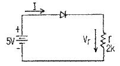
- Vr = 4.3[V], I = 2.15[mA]
- Vr = 4.95[V], I = 2.48[mA]
- Vr = 5[V], I = 2.5[mA]
- Vr = 5.7[V], I = 2.85[mA]
(정답률: 알수없음)
3. 수정발진기는 수정(X-tai)의 어떤 것을 이용한 것인가?
- 압전기 효과
- 자기 현상
- Hall 효과
- Seeback 효과
(정답률: 75%)
4. 다음 중 증폭기의 접지방식에서 가장 높은 주파수까지 증폭할 수 있는 것은?
- 베이스접지
- 이미터접지
- 컬렉터접지
- 공통접지
(정답률: 알수없음)
5.
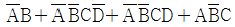
를 간략화 하면?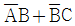
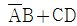
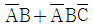
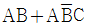
(정답률: 알수없음)
6. 이미터접지 증폭기에서 β=50, Ico=0.1[mA], IB=0.2[mA]일 때, 컬렉터 전류는?
- 10.6[mA]
- 13.2[mA]
- 15.1[mA]
- 18.2[mA]
(정답률: 알수없음)
7. 다음 중 발진기를 증폭기와 비교하였을 때 가장 큰 차이점은?
- 입력신호가 불필요하다.
- 이득이 크다.
- 항상 출력이 같다.
- DC 공급전압이 불필요하다.
(정답률: 60%)
8. 다음 회로는 어떤 논리 게이트의 구성인가?
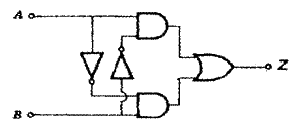
- NAND 게이트
- EX-OR 게이트
- NOR 게이트
- OR 게이트
(정답률: 알수없음)
9. 그림과 같은 연산증폭기 회로의 전압증폭도 Av는? (단, R1=1[kΩ], R2=5[kΩ] 이다.)
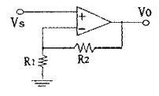
- 4
- -5
- 6
- -8
(정답률: 50%)
10. 구형파의 특성과 관계되는 설명으로 틀린 것은?
- 축적시간은 입력펄스가 끝난 후 출력펄스가 최대 진폭의 90%가 되기까지의 감소하는데 걸리는 시간이다.
- 펄스 진폭의 뒷부분이 감쇠되는 경우를 새그(sag)가 생겼다고 한다.
- 상승파형에서 이상적 펄스파의 진폭보다 높은 부분의 높이를 오버 슈트(over shoot)라 한다.
- 펄스의 상승부분에서 진동의 정도를 링깅(ringging)이라 하고 낮은 주파수 성분에 의해 생긴다.
(정답률: 64%)
11. A, B, C 양의 논리입력에서 A ＜ B 이고, B ＞ C 일 경우에만 출력 Y가 “
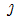
” 이 되는 논리식은?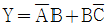
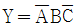
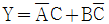
- Y = AC
(정답률: 70%)
12. 정전압 조정기에서 전류 제한을 하는 주된 목적은?
- 과전류로부터 전류 제한기를 보호하기 위해서
- 전원장치 변압기가 타버리는 것을 방지하기 위해서
- 일정한 출력 전압을 유지하기 위해서
- 과전류로부터 부하측을 보호하기 위해서
(정답률: 50%)
13. 서로 다른 두 종류의 금속을 폐로가 되도록 접속하고 접속한 두 점 사이에 온도차를 주면 기전력이 발생하여 전류가 흐르는 현상은?
- 펠티어(Peltier) 효과
- 제벡(Seebeck) 효과
- 홀(Hall) 효과
- 톰슨(Thomson) 효과
(정답률: 58%)
14. 그림과 같은 회로에서 동작점을 안정화시키기 위한 소자는?
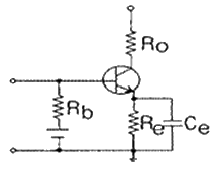
- Ro
- Rb
- Re
- Ce
(정답률: 59%)
15. 다음 중 연산증폭기의 설명으로 적합하지 않은 것은?
- 주파수 대역폭이 매우 적다.
- 입력 임피던스가 크고 출력 임피던스가 작다.
- 기본적으로 차동증폭회로의 구성으로 되어 있다.
- CMRR이 클수록 성능이 우수하다.
(정답률: 42%)
16. 다음 중 아날로그 신호를 디지털 신호로 변환할 때 사용하는 회로는?
- 미분회로
- 시미트 트리거회로
- 클램프회로
- 적분회로
(정답률: 알수없음)
17. 다음 중 변조를 하는 이유가 아닌 것은?
- 시스템의 대형화
- 잡음 및 간섭의 영향을 줄임
- 주파수 분할 다중 통신
- 송수신용 안테나의 소형화
(정답률: 64%)
18. DSB는 SSB방식에 비하여 점유주파수 대역폭이 몇 배가 되는가?
- 1배
- 2배
- 3배
- 4배
(정답률: 60%)
19. 트랜지스터의 베이스 폭을 얇게 하는 이유는 어떤 특성을 좋게 하기 위한 것인가?
- 온도특성
- 주파수특성
- 잡음특성
- 전도특성
(정답률: 64%)
20. 다음 중 잡음지수의 설명으로 틀린 것은?
- 무잡음 이상 증폭기의 잡음지수는 1이다.
- 실제의 증폭기 잡음지수 NF는 1보다 크다.
- 시스템의 성능을 평가하는 지수이다.
- 다단 증폭기의 종합지수는 각 단의 잡음지수의 합이다.
(정답률: 75%)
2과목: 회로이론 및 제어공학
21. 어떤 회로에 60 + j80[V]의 전압을 인가할 때 부하에 흐르는 전류가 4 - j3[A]이다. 부하의 임피던스는?
- -j20[Ω]
- j20[Ω]
- 20 + j20[Ω]
- 20 - j20[Ω]
(정답률: 70%)
22. 전원과 부하가 다같이 △결선된 3상 평형회로에서 전원전압이 400[V], 부하 임피던스가 4 + j3[Ω]인 경우 선전류는?
- 80 [A]
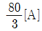
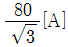
- 80√3 [A]
(정답률: 62%)
23. 어떤 소자에 걸리는 전압이 100√2 cos(314t –  )[V]이고, 흐르는 전류가 3√2 cos(314t +
)[V]이고, 흐르는 전류가 3√2 cos(314t +
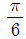
)[A]일 때 소비되는 전력은?- 100[W]
- 150[W]
- 250[W]
- 300[W]
(정답률: 알수없음)
24. 각상의 전류가 ia = 30sinωt [A], ib = 30sin(ωt – 90°) [A], ic = 30sin(ωt + 90°) [A] 일 때 영상 대칭분 전류는?
- 10sinωt
- 30sinωt
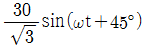
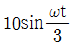
(정답률: 알수없음)
25. R-C 병렬회로에 60[Hz], 100[V]를 가했을 때 유효전력이 800[W]이고 무효전력이 600[Var]이다. 콘덴서의 정전용량은 약 몇 [μF]인가?
- 159[μF]
- 180[μF]
- 189[μF]
- 219[μF]
(정답률: 20%)
26. 3상 유도전동기의 출력이 3HP, 전압이 200V, 효율 80%, 역률 90% 일 때 진동기에 유입하는 선전류는? (단, 1HP 은 746[W]이다)
- 약 7.18[A]
- 약 9.18[A]
- 약 6.85[A]
- 약 8.97[A]
(정답률: 40%)
27. R-L 직렬회로에 v=100sin(120πt)[V] 의 전원을 연결하여 i = 2sin(120πt – 45°)[A]의 전류가 흐르도록 하려면 저항은?
- 50[Ω]
 [Ω]
[Ω]- 50√2[Ω]
- 100[Ω]
(정답률: 37%)
28. 위상정수가
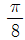
[rad/m]인 선로의 1[MHz]에 대한 전파 속도는?- 8 × 107[m/sec]
- 5 × 107[m/sec]
- 3.2 × 107[m/sec]
- 1.6 × 107[m/sec]
(정답률: 62%)
29.
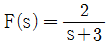
의 역 리플라스 변환은?- 2e-3t
- 2e3t
- 3e2t
- 3e-2t
(정답률: 알수없음)
30. 두 개의 커패시터 C1, C2를 직렬로 연결하면 합성정전용량이 3.75[F]이고, 병렬로 연결하면 합성정전용량이 16[F]이 된다. 두 커패시터는 각각 몇 [F]인가?
- 4[F]과 12[F]
- 5[F]과 11[F]
- 6[F]과 10[F]
- 7[F]과 9[F]
(정답률: 67%)
31. 제어계의 종류 중 목표 값에 의한 분류에 해당되는 것은?
- 프로세스 제어
- 서보 기구
- 자동조정
- 비율 제어
(정답률: 28%)
32. 다음 중 시퀀스(sequence)제어에 대한 설명으로 옳지 않은 것은?
- 조합논리회로도 사용된다.
- 제어용 계전기가 사용된다.
- 폐회로제어계로 사용된다.
- 시간 지연 요소로 사용된다.
(정답률: 70%)
33. 개루프 전달함수가 다음과 같은 계에서 단위속도 입력에 대한 정상 편차는?
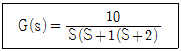
- 0.2
- 0.25
- 0.33
- 0.5
(정답률: 19%)
34. 다음의 블록선도에서 특성방정식의 근은?
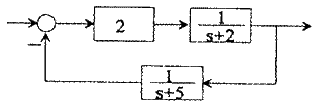
- -2, -5
- 2, 5
- -3, -4
- 3, 4
(정답률: 알수없음)
35. 다음의 신호흐름선도에서 특성방정식의 근은?
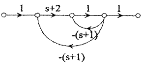
- -1, -2
- 1, 2
- -2, -2
- -1, 2
(정답률: 20%)
36. 상태 방정식이
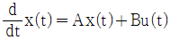
,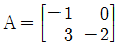
,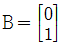
으로 주어져 있다. 이 상태방정식에 대한 상태천이행렬(state transition matrix)의 2행 1열의 요소는?- 3e-t - 3e-2t
- -3e-t + 3e-2t
- 6e-t - 6e-2t
- -6e-t + 6e-2t
(정답률: 알수없음)
37. 다음 그림에서 전달함수가 0형일 때 정상위치오차 esp는? (단, Kp는 위치오차상수이다.)
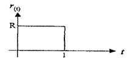
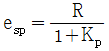
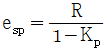
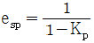
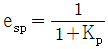
(정답률: 40%)
38. 다음 신호 흐름선도에서 전달함수
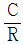
를 구하면?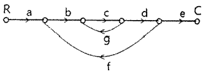
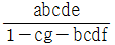
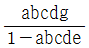
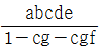
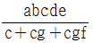
(정답률: 64%)
39. 다음과 같이 나타낼 수 있는 2차 제어계의 극의 설명 중 틀린 것은?
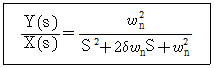
- δ ＜ 0 이면 S평면 우반부에 있다.
- δ = 0 이면 두극은 허수이고 S = ±jωn이다.
- δ = 1 일 때 두극은 같고 부의 실수(S = -ωn)이다.
- δ ＞ 1 이면 두극은 부의 실수와 양의 실수가 된다.
(정답률: 알수없음)
40. 다음 중
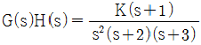
에서 근궤적의 수는?- 1
- 2
- 3
- 4
(정답률: 64%)
3과목: 신호기기
41. 건널목경보기의 경보 음량은 경보기 1m 전방에서 얼마이어야 하는가?
- 30 ~ 50[dB]
- 50 ~ 100[dB]
- 60 ~ 130[dB]
- 80 ~ 150[dB]
(정답률: 59%)
42. IGB(Insulated Gate Bipolar Transistor)의 특징에 대한 설명으로 잘못된 것은?
- 역방향 전압 저지 특성을 갖는다.
- 병렬접속은 할 수 없다.
- 고속스위칭 성능을 가지고 있다.
- Turn-off시 넓은 안전 동작 영역을 가지고 있다.
(정답률: 46%)
43. 전동차단기에서 전동기의 클러치 조정은 차단봉 교체시 시행하여야 하며 전동기의 슬립전류는 몇 [A] 이하로 하여야 하는가?
- 5[A]
- 6[A]
- 7[A]
- 8[A]
(정답률: 알수없음)
44. 신호기용 변압기(STr)의 단위용량이 잘못 제시된 것은? (단, 신호전구는 50V-25W 기준)
- 신호가 3현시 : 25[VA]
- 신호기 4현시 : 50[VA]
- 신호기 5현시 : 50[VA]
- 입환신호기 : 25[VA]
(정답률: 67%)
45. 유도전동기의 전압이 일정하고 주파수가 정격치에서 수 % 감소할 때 유도전동기의 특성에 미치는 영향이 아닌 것은?
- 여자전류 감소
- 역률 저하
- 동기속도 감소
- 누설 리액턴스 감소
(정답률: 36%)
46. 계전기실, 열차집중제어장치 기계실, 신호원격제어장치 및 건널목의 AC 전원의 접지저항은 몇 [Ω]이하로 하여야 하는가?
- 10[Ω]
- 15[Ω]
- 20[Ω]
- 25[Ω]
(정답률: 알수없음)
47. 출력에 대한 전부하 동손이 2%, 철손이 1%인 변압기의 전부하 효율은 약 몇 [%]인가?
- 93[%]
- 95[%]
- 97[%]
- 99[%]
(정답률: 47%)
48. 전기자 도체의 총수 400, 10극, 단중 파권으로 매극의 자속수가 0.02Wb인 직류 발전기가 1200rpm의 속도로 회전할 때, 그 유도기전력은?
- 700[V]
- 720[V]
- 750[V]
- 800[V]
(정답률: 46%)
49. 열차의 곡선저항 설명으로 옳은 것은?
- 차륜과 제륜의 궤조간 마찰계수에 반비례한다.
- 열차의 속도에 비례하고 풍압에 반비례한다.
- 궤조곡선의 곡선 반지름에 반비례한다.
- 열차의 자중과 화물량에 비례한다.
(정답률: 알수없음)
50. 3상 유도 전동기의 1차 압력 60kW, 1차 손실 1kW, 슬립 3% 일 때 기계적 출력은 약 몇 [kW] 인가?
- 57[kW]
- 59[kW]
- 61[kW]
- 63[kW]
(정답률: 알수없음)
51. 제어계전기의 접점저항은 몇 [mΩ] 이하이어야 하는가?
- 60[mΩ]
- 80[mΩ]
- 100[mΩ]
- 120[mΩ]
(정답률: 37%)
52. 신호용 계전기의 종류에서 직류계전기의 종류에 해당되는 것은?
- 유극 계전기
- 1원형 계전기
- 2원형 계전기
- 3원형 계전기
(정답률: 67%)
53. 전기기계의 철심을 성층하는 이유로 가장 적절한 것은?
- 기계손을 적게 하기 위하여
- 히스테리시스손을 적게 하기 위하여
- 표유 부하손을 적게 하기 위하여
- 와류손을 적게 하기 위하여
(정답률: 30%)
54. 50V-25W 신호기의 전압을 45V로 조정하였을 때 흐르는 전류는?
- 0.2[A]
- 0.45[A]
- 0.9[A]
- 1.2[A]
(정답률: 50%)
55. 선로전환기 밀착은 기본레일이 움직이지 않는 상태에서 1mm를 벌리는데 정위, 반위를 균등하게 몇 [kg]을 기준으로 하는가?
- 50[kg]
- 100[kg]
- 120[kg]
- 150[kg]
(정답률: 알수없음)
56. 여자전류가 흐르고서부터 N접점이 구성(접촉)될 때까지 다소간 시소를 갖는 계전기는?
- 궤도계전기
- 완동계전기
- 시소계전기
- 완방계전기
(정답률: 67%)
57. 장내신호기에 종속하여 그 바깥쪽에서 장내신호기의 신호현시상태를 예고하기 위해 설비한 신호기는?
- 원방신호기
- 중계신호기
- 엄호신호기
- 입환신호기
(정답률: 42%)
58. 건널목 경보기의 조정이 잘못된 것은?
- 경보종의 타종수는 기당 매분 70 ~ 100회
- 경보등의 단자전압은 정격값의 0.8 ~ 0.9배
- 경보등의 점멸회수는 분당 50±10회
- 경보기와 제어유니트의 절연저항은 전기회로와 대자간 2MΩ이상
(정답률: 알수없음)
59. 변압기의 병렬운전 조건과 거리가 먼 것은?
- 각 변압기의 권수비가 같을 것
- 각 변압기의 극성이 같을 것
- 각 변압기의 % 임피던스강하가 같을 것
- 각 변압기의 1, 2차 정격전류가 같을 것
(정답률: 46%)
60. 다음 그림과 같은 계전기의 결선도용 기호의 명칭은?
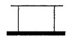
- 거치형 완동 계전기
- 거치형 완방 계전기
- 삽입형 완동 계전기
- 삽입형 완방 계전기
(정답률: 77%)
4과목: 신호공학
61. 입환표지 또는 신호기가 진행신호를 현시한 후 정지 신호로 바꿀 때 일정시간동안 열차점유 유 ㆍ 무와관계없이 선로 전환기를 전환할 수 없도록 하는 쇄정법은?
- 보류쇄정
- 철사쇄정
- 진로쇄정
- 시간쇄정
(정답률: 37%)
62. 연동장치의 보류쇄정 설치개소가 아닌 것은?
- 자동구간의 정거장에서 통과열차가 없는 선로의 입환신호기
- 진로내의 동력전철기가 설치된 비자동구간 정거장의 장내신호기
- 자동구간의 정거장에서 통과열차가 있는 선로의 출발 신호기
- 자동구간과 비자동구간과의 경계가 되는 정거장의 비자동구간으로부터 진입하는 열차에 대한 장내신호기
(정답률: 알수없음)
63. 차상신호방식의 필요성이 아닌 것은?
- 안전성과 신뢰성 확보
- 열차속도 향상
- 선로용량 증대
- 설비의 자동화
(정답률: 알수없음)
64. 궤도회로의 단락감도 측정방법으로 틀린 것은?
- 교류 궤도회로의 착전단 레일 위해서 측정한다.
- 병렬 궤도회로의 병렬부분 끝 레일 위에서 측정한다.
- 직류 궤도회로의 착전단 레일 위에서 측정한다.
- 직류 궤도회로의 송전단 레일 위에서 측정한다.
(정답률: 40%)
65. 삽입형 직류 무극선조계전기의 선륜저항이 140Ω일 때 정격전류는 약 몇 [A]인가?
- 0.13
- 0.17
- 0.21
- 0.25
(정답률: 알수없음)
66. MJ81형 선로전환기의 표시회로가 구성되어야 하는 경우는?
- 표시회로의 전원을 차단한 경우
- 수동키 스위치함을 열어 수동키를 인출한 경우
- 기본레일과 텅레일 사이의 밀착 간격이 1mm이하로 선로 전환기를 전환시킨 경우
- 간격간에 밀착검지기 설치지점에서 기본레일과 텅레일 사이의 밀착간격이 8mm 이격된 방향으로 선로전환기를 전환시킨 경우
(정답률: 55%)
67. 비자동구간에 장내신호기에 종속하여 그 외방에서 장내신호기의 신호 현시를 예고하는 신호기는?
- 중계신호기
- 원방신호기
- 엄호신호기
- 유도신호기
(정답률: 알수없음)
68. 궤도회로의 단락강도는 그 궤도회로를 통과하는 열차에 대하여 임피던스 본드 및 AF궤도회로 구간은 맑은 날 몇 [Ω] 이상을 확보하여야 하는가?
- 0.06[Ω]
- 0.16[Ω]
- 0.01[Ω]
- 0.1[Ω]
(정답률: 40%)
69. 진로쇄정을 진로구분쇄정으로 설치하는 목적으로 옳은 것은?
- 보안도를 향상시킨다.
- 역구내 운전 정리 작업의 효율을 증대시킨다.
- 시설비를 크게 절감하기 위함이다.
- 열차의 안전운행을 도모시키기 위함이다.
(정답률: 알수없음)
70. 자동폐색구간에서 최소운전시격에 영향을 주는 요소가 아닌 것은?
- 열차의 제동거리
- 폐색구간의 거리
- 열차 길이
- 역간 거리
(정답률: 알수없음)
71. 연동폐색식에 대한 설명으로 틀린 것은?
- 복선과 단선구간에 모두 사용한다.
- 폐색장치에는 출발폐색, 진행중, 장내폐색의 3가지 표시등이 있다.
- 신호기와 연동시켜 신호현시와 폐색취급을 단일화한 방식이다.
- 연동폐색 승인을 요구할 때 전원은 반드시 출발역의 전원에 이해 승인한다.
(정답률: 59%)
72. 전기선로 전환기의 전동기 특성곡선으로 옳은 것은?
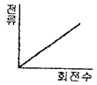
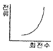
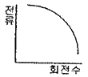
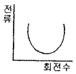
(정답률: 알수없음)
73. 신호용 정류기의 효율시험시 입력전압을 규정치로 유지하고 출력측을 조정하여 출력전압과 전류를 정격치로 놓았을 때의 효율[%]의 산출식은?
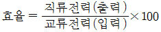
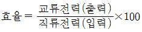
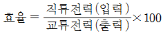
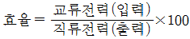
(정답률: 67%)
74. 신호 원격제어장치에 공급되는 전원전압은 특별히 정한 것을 제외하고 정격의 몇 [%] 이내이어야 하는가?
- ± 3%
- ± 5%
- ± 7%
- ± 10%
(정답률: 40%)
75. 전차선 절연구간 예고지상장치에 대한 설명 중 잘못된 것은?
- 송신기와 지상자의 간격은 20m 이내
- 취부위치는 점제어식 자동열차정지장치에 준하여 설치
- 송신 주파수 범위는 68kHz ± 68Hz
- 입력측 전원전압은 AC 110± 10V(60Hz) 이하
(정답률: 알수없음)
76. 복궤조 궤도회로에서 좌우 2본의 각 레일의 전류값이 각각 600A, 500A가 흐른다면 불평형의 정도는?
- 6[%]
- 7[%]
- 8[%]
- 9[%]
(정답률: 67%)
77. 고속철도 ATC 차상장치의 기능이 아닌 것은?
- 속도초과시 자동기록
- 열차제동곡선 생성
- 허용속도를 운전실에 표시
- 열차운행상황 자동기록
(정답률: 알수없음)
78. 궤도회로 시구간에 대한 설명으로 옳은 것은?
- 역구간 분기부의 사구간 길이는 10m 미만으로 한다.
- 사구간이 1210mm 이상인 경우는 타 궤도회로와 10m 이상 이격시킨다.
- 단독 사구간의 길이는 7m 를 넘지 않도록 하여야 하며 7m가 넘는 곳에서는 사구간 보완회로를 구성한다.
- 사구간이 7m 이상인 경우는 타 궤도회로와 5m 이상 이격시킨다.
(정답률: 50%)
79. 신호용 축전지에 대한 설명 중 틀린 것은?
- 연축전지와 방전종지전압은 2.25V
- 연축전지의 균등충전전압은 2.25 ~ 2.40V
- 알카리축전지의 부동충전전압은 1.47V
- 알카리축전지의 균등충전전압은 1.7V
(정답률: 19%)
80. 3위식 신호기의 5현시 방법으로 옳은 것은?
- R, RY, Y, YG, G
- R, YY, Y, YG, G
- R, YY, Y, RG, G
- R, WY, Y, WG, G
(정답률: 60%)
진폭변조는 원래의 신호에 진폭을 변화시켜 전송하는 방식으로, 주파수는 일정하게 유지되고 진폭이 변화하기 때문이다. 예를 들어, AM 방식의 라디오에서는 음성 신호를 진폭으로 변조하여 전송하며, 이때 주파수는 일정하게 유지된다.